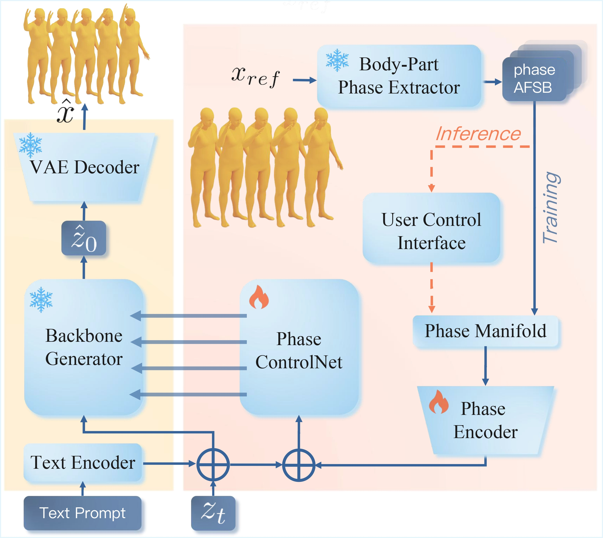

Text Prompt: a person is waving with his right hand.
Overview
Abstract
Text-to-motion (T2M) generation is becoming a practical tool for animation and interactive avatars. However, modifying specific body parts while maintaining overall motion coherence remains challenging. Existing methods typically rely on cumbersome, high-dimensional joint constraints (e.g., trajectories), which hinder user-friendly, iterative refinement. To address this, we propose Modular Body-Part Phase Control, a plug-and-play framework enabling structured, localized editing via a compact, scalar-based phase interface. By modeling body-part latent motion channels as sinusoidal phase signals—characterized by amplitude, frequency, phase shift, and offset—we extract interpretable codes that capture part-specific dynamics. A modular Phase ControlNet branch then injects this signal via residual feature modulation, seamlessly decoupling control from the generative backbone. Experiments on both diffusion- and flow-based models demonstrate that our approach provides predictable and fine-grained control over motion magnitude, speed, and timing. It preserves global motion coherence and offers a practical paradigm for controllable T2M generation.
Method
Pipeline / Method Overview

Pipeline Figure Placeholder
Add your method overview image at
assets/pipeline.jpg
Experiments
Video Results
We visualize localized body-part control results produced by our modular phase interface. The three groups below highlight how scalar edits to amplitude, frequency, and phase shift yield predictable changes in motion magnitude, execution pace, and temporal alignment while keeping the remaining motion coherent.
Amplitude Control
Body-Part A editing cases showing controllable motion magnitude.
Text Prompt: a person waves with their left hand.
Text Prompt: the person is waving at someone with the right hand.
Text Prompt: this person walks clumsy while moving forward.
Frequency Control
Body-Part F editing cases showing controllable motion pace.
Text Prompt: person carefully walks with left right first in a straight direction.
Text Prompt: a person runs and then jumps.
Text Prompt: a person punches in front of them with their left hand.
Text Prompt: figure jogs forward, arms bent in front of them.
Phase Shift Control
Body-Part S editing cases showing controllable temporal alignment.
Text Prompt: person carefully walks with left right first in a straight direction.
Text Prompt: the person claps and puts their hands down.
Text Prompt: the character scratches his head with his right arm.
Text Prompt: a person raises and then lowers their left hand.
Interactive Editing Demo
The demo illustrates the intended multi-round workflow: phase parameters are extracted from a reference or generated motion, users apply simple scalar edits to the target body part, and the updated phase manifold is re-injected to refine the next generation result.
Reference
BibTeX / Citation
@article{dai2026bodypartphase,
title = {Controllable Text-to-Motion Generation via Modular Body-Part Phase Control},
author = {Minyue Dai and Ke Fan and Anyi Rao and Jingbo Wang and Bo Dai},
journal = {arXiv preprint},
year = {2026}
}